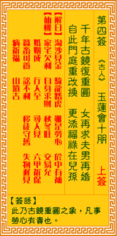

观音灵签第四签 【玉莲会十朋】 |
 | |||
菱花镜破复重圆 女再求夫男再婚 自此门闾重改换，更添福棱与儿孙 |
||||
| 【吉凶】 | 中中签 | 【宫位】 | 子宫 | |
| 【签语】 | 此卦古镜重圆之象，凡事劳心有贵也。 | |||
| 【解曰】 | 淘沙见金 骑龙踏虎 虽是劳心 于中有补 | |||
| 【仙机】 | 此签家宅欠利，自身求财秋冬旺，交易允，婚姻成，行人全，寻人见，六甲祈保，蚕畜可养，讼不利，移徙守旧，失物迟见，病祈福，山坟吉。 | |||
| 【详解】 | 菱花破镜如何能够重圆，男女各有欲追求的姻缘;此后将有一番新气象，惟再积德修善，功德更添福禄，并有助后代儿孙安康。) 五五念五，骑龙跨虎，事虽劳心，于中有补。此签破镜重圆之象，凡事成就则吉。 菱花镜破镜重圆。为破镜重圆之象。凡事成就吉者也。不是上上者。为中中之签。是先凶后吉之签。交易持公平。求财亦在秋冬转旺。如逢如此之中中运也。可积 极为善。积德。当有转吉之机。 此签有”历久弥坚”之意。意味当事人，不改初衷。须知”人生以服务为目的”，无论各行各业，应秉持着服务人群的精神、坚守做事原则，不存一己之私。切忌 被外在的因素影响而轻易弃守原本的理念。凡事一片赤诚、以利他为先，即使人事环境不断地交替更迭，也不会因外在的因素而有所动摇。纵使偶有闲言闲语，但 自问无愧于心，面对蜚短流长，又何妨一笑置之。流言不攻自破，真理不辩自明。只要抱守初衷，坚持信念，自可处之泰然、乐在其中。 | |||
| 【典故】 | 宋朝王十朋少时家贫，好学不倦，和钱玉莲订婚以荆钗为记。结婚后，十朋上京赴考，夫妻暂时离别，奸人孙汝权迫玉莲相嫁，玉莲不从，投河自杀，被救。同时十朋中了状元，也不肯取丞相的女儿为妻，因此被皇帝贬职，后来玉莲经过了许多波折，终于和十朋相会，夫妻重复团圆。《荆钗记》传奇故事 | |||